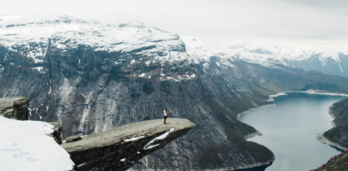

Главная / Новости компании
Новости
Компании
6 июня 2019
Выбираем SD-карты для съемки
Раз в год среди пользователей сайта проводят опрос, который позволяет составить портрет среднестатистического пользователя сайта, во многом совпадающий с образом.
40 комментариев
30 мая 2019
Подкаст LAM: Безнадёжность, смерть, обман и фильм
Каждый день сайт Stack Overflow, популярную систему вопросов и ответов, которая есть в закладках у многих программистов, посещают около 32 млн человек.
162 комментария
RSS-Рассылка
Все
Фотокамеры
Линзы
Телефоны
Деньги
Путешествия
Жилье
Популярные товары
PowerShot SX620 HS
Canon
От 1 850 Р
Alpha ILCE-6000 Kit
Sony
От 2 400 Р